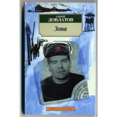
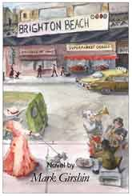
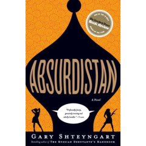

Works of The Third Wave
Russians in America: The Third Wave
Works
Prose
Many novels were first published abroad in the 1970s and 1980s. Some were related to Russia and that experience. Others focused on the new American life. Solzhenitsyn's The Red Wheel (Красное колесо), Sasha Sokolov's, School for Fools (Школа для дураков), the scandalous It's me, Eddie (Это я, Эдичка) by Limonov come immediately to mind. But there were others. Any list risks the charge of incompleteness. I leave the task of reading them to individual scholars.

MemoirsMuch was written to describe the horrors of Soviet system, from prison camps to psychiatric hospitals to incarcerate dissidents-or those who thought differently (инакомыслящие). The lines between fiction and documentary were often blurred, such as in the works of Dovlatov. Soon the newly arrived writers would begin to recount their experiences in America.
Poetry
There was Brodsky-and then there were others. Newspapers, journals and collections (сборники и альманахи) gave ample opportunity for Russian poets to see their work in print. Poetry was less likely to be translated into English, although there were some notable exceptions, such as Brodsky and the efforts of Arkadiy Rovner in Gnosis (Гносис).

Works about AmericaMany of the works of the Third Wave writers had been written or conceived in the Soviet Union, and in the beginning it was natural that such works reflected the experience of Russia. With time some turned their attention to the new surroundings and incorporated American life into their works.
Russian Writing Today
Russian writers in America continue to produce today prolifically. Peter Nemirovskij, Barefoot through New York (Босиком по Нью-Йорку, M; 2005)) is one. He has appeared В новом свете, the American edition, as well as in Panorama (Панорама) and Russian Bazaar (Русский базар). Lera Averbax, Steps to Eternity (Ступеньки в вечность), has published prose and poetry. The pages of the journals and newspapers contain dozen of writers in the Russian language.

English Writings by Russians
Then of course are the writings by Americans of Russian heritage Gary Shteyngart, Olga Grushin, etc. This too is a rich topic for future research.